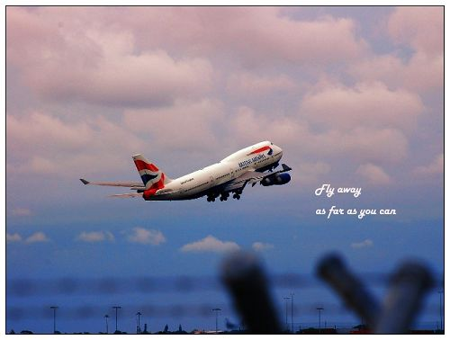
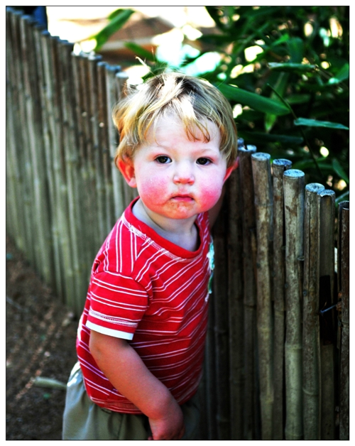
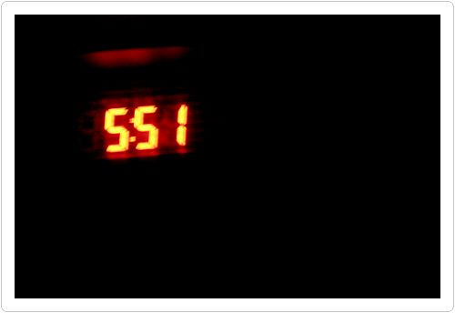

两个人的相机日志：2月13日 @ Feb 14, 2009
jiajialing拍摄。
第一张居然是2007年的相片，真够怀旧的~
反复观看第一张相片，今天感受到的是焦虑。
以前看感受到的是惆怅。
你真是喜欢浓郁的色彩，张张红是红黑是黑蓝是蓝的，澳洲的色彩一定比这里丰富吧？




星期五，疲劳。
从精神到肉体，也许是被阴天整的。
也不想说话。
*那只装酒的盒子不知被谁扔在小区的围栏外面，中国人钱多的同时却没见素质和修养提高多少；
*今天5：51分下班，只想早早回家，充分利用属于自己的时间；
*那是晚上拍的植物，和白天有什么不同吗？
*邻居家的小朋友，手里拿着5元人民币，就那么认真地拿着，没有任何表情，总觉得怪怪的。




4 Responses to “两个人的相机日志：2月13日”
2009-02-14
喜欢最后一张，给人遐想的空间！
2009-02-14
小朋友刚捡到5元钱，在想是不是交给警察叔叔呢
现在警察叔叔不好找啊，需要他的时候，要打110
2009-02-14
我也喜欢浓郁的色彩~~赞~~
2009-02-15
第一张色彩很醒目，看上去很舒服，第三张小女孩白种皮肤带点粉红色的腮红，怎么那么可爱呢！
Leave A Reply
存档只读，评论已关闭。